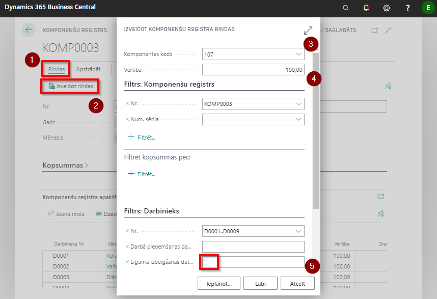

Saraksta automātiska ģenerēšana
Ja piemaksas un atvilkumus paredzēts ievadīt visiem (vai lielākai daļai) darbiniekiem ar vienādu 1. un/vai 2.dimensiju vērtību, tad sarakstu var ieģenerēt automātiski:
Sadaļa Rindas (
 ) - Izveidot rindas (
) - Izveidot rindas ( ).
).Rindu izveidošanas logā jāaizpilda lauks Komponentes kods (
 ) - norāda attiecīgo piemaksas vai atvilkumu kodu no izvēlnes. Šajā gadījumā visiem izvēlētajiem darbiniekiem automātiski rindās tiks pievienota norādītā algas komponente. Nepieciešamības gadījumā šo komponenti pēc tam reģistra sarakstā varēs nomainīt;
) - norāda attiecīgo piemaksas vai atvilkumu kodu no izvēlnes. Šajā gadījumā visiem izvēlētajiem darbiniekiem automātiski rindās tiks pievienota norādītā algas komponente. Nepieciešamības gadījumā šo komponenti pēc tam reģistra sarakstā varēs nomainīt;Gadījumā, ja visiem darbiniekiem jāievada vienāda piemaksas vai atvilkuma summa, var izmantot lauku Vērtība (
 ). Nepieciešamības gadījumā šo komponenti pēc tam reģistra sarakstā varēs nomainīt ;
). Nepieciešamības gadījumā šo komponenti pēc tam reģistra sarakstā varēs nomainīt ;Filtra sadaļā Darbinieks var ievadīt nepieciešamos darbinieku atlases kritērijus. Piemēram, dimensijas vērtības, pēc kurām tiks atlasīti visi tie darbinieki, kuriem Darbinieku kartiņā atbilst norādītās vērtības;
Lai sarakstā ieģenerētu tikai tos darbiniekus, kuri attiecīgajā mēnesī strādājuši (nav atbrīvoti līdz darba mēneša sākumam), laukā Līguma izbeigšanas datums (
 ) jāuzliek filtrs ar diviem apostrofiem (‘ ’). Tas nozīmē, ka tiks atlasīti tikai tie darbinieki, kuriem Darbinieku kartiņā laukā Līguma izbeigšanas datums ir tukšs;
) jāuzliek filtrs ar diviem apostrofiem (‘ ’). Tas nozīmē, ka tiks atlasīti tikai tie darbinieki, kuriem Darbinieku kartiņā laukā Līguma izbeigšanas datums ir tukšs;

- Kad visas vērtības Algas komponenšu reģistra rindu izveides laukos ievadītas, ar pogu Labi apstiprina saraksta izveidi. Iegūst sarakstu ar vērtībām.
- Izveidotajā sarakstā jāaizpilda trūkstošā informācija par Vērtībām, ja tāda palikusi neievadīta;
- Ja nepieciešams, šo sarakstu var koriģēt, izdzēšot liekos darbiniekus. To dara, iezīmējot izdzēšamā darbinieka ieraksta rindiņu un ar peles labo pogu izvēlas iespēju Dzēst rindu (Ctrl + Del);
- Ja nepieciešams, sarakstā manuāli var izdarīt korekcijas, nomainot Algas komponentes kodu, Vērtību;
- Gadījumā, ja no sākuma tika izvēlēta tikai viena Algas komponente (piem., Papildpiemaksa 107) un izrādās, ka visiem šiem darbiniekiem nepieciešams ievadīt arī atvilkumus vai cita veida piemaksas, tad iespējams šo sarakstu papildināt ar citu komponenti, atkārtojot iepriekš aprakstīto funkciju Izveidot rindas un norādot nepieciešamo Algas komponenti.